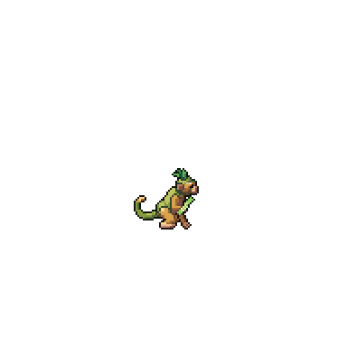
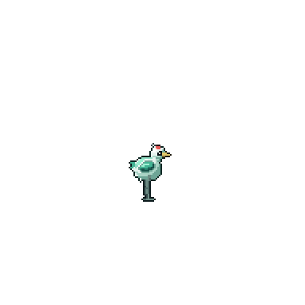
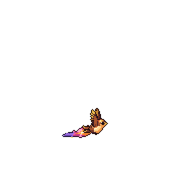
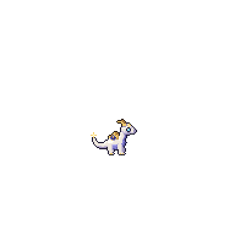

Spirit Animals
Stable
Swarm
You command three at Sage and above
BESIDE YOU · 1 of 3

Reed Otter is out
two posts open
THE STABLE · 6 animals




Reed Otter
Lv 25
Water · Hatchling · Common · Gatherer · Master’s contract
Level
1,747 / 2,500
Bond 1.1 / 10 hearts
Grievously wounded: −20% until it rests at the Beast Hall
Growth
Hatchling
Juvenile
Adult
Awakened
Sovereign
Primordial
Juvenile: ✓ Level 15 · 3 hearts, 1.1 now · ✓ you at Heart Tempering 1
It shows its growth, aptitude and first trait, and opens two skill slots
Bloodline purity 14
next at 50: Ancestral Tide
50 · its bloodline skill
90 · Tide-Mother form
Skills
SplashReed DiveOtter CurrentRiver Gift
Traits ? · ? · ? until Juvenile · learned skills: none yet, two slots at Juvenile · favourite foods: Roast Fish, Riverfish Soup
CARE
Rest
Carry
Combat
Gatherer
Cultivate
Guard
Role · a gatherer by nature: +25%
GEAR
Collar
Talisman
Saddle
NEST · the eggs
No egg is warming.
A Spirit Egg waits in your storage chest: bring it here to hatch it.
Copperjaw swarm 50 of 5,000
food for 32 h · eats ore
▶